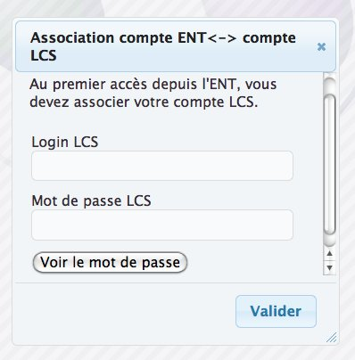

Le module LCS ENT, permet l'authentification LCS sur un ENT pourvu d'un service CAS.
Lors de l'installation du module lcs-ent, le webmail LCS Squirrelmail, est remplacé par Roundcube (module LCS lcs-roundcube).
Un utilisateur, ayant le droit lcs_is_admin, dispose d'une section ENT dans le menu d'administration.
Il permet de choisir le mode d'authentification (auth_mod):
Le nom d'hôte de la plateforme d'authentification ENT (ent_hosyname), exemple : ent.crdp.ac-caen.fr
Le port d'écoute du service d'authentification (ent_port), exemple : 443
L'URI de l'ENT (ent_uri), exemple : connexion
Lors de la phase d'authentification LCS, c'est le formulaire d'authentification de la plateforme ENT qui vous est présenté, vous devez donc saisir le login, mot de passe de votre compte ENT.
Dans le cas de la 1ere authentification, il vous est demandé de rapprocher votre compte LCS de votre compte ENT, pour cela un formulaire de rapprochement vous est présenté, vous devez saisir le login mot de passe de votre compte LCS. Cette opération, est nécessaire qu'une seule fois.
Si l'utilisateur LCS, ne possède pas de compte ENT, le mode d'authentification LCS "traditionnel" est bien entendu toujours possible.